Ready to explore the ocean's hidden wonders
and their mythical-like inhabitants?

Save Ocean Life
Home
Explore
Donate
Hi, my name is Vaquita!
I live in the Gulf of California.
I used to be part of a powerful community and lived
in a beautiful habitat, but now my home is now
littered with trash....
Are you willing to help me?
Yes
No